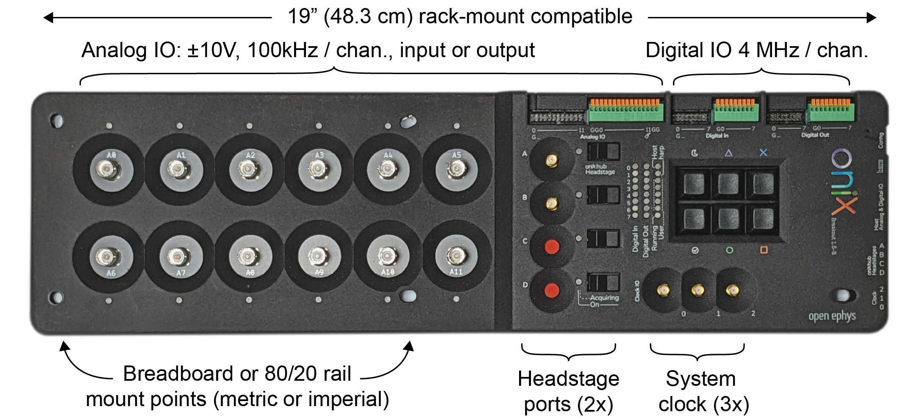

Breakout Board
The breakout board acts as the central interface for headstages, miniscopes, and auxiliary IO to communicate with the computer. It provides the following features:
- Headstage IO: 2x high-bandwidth, general-purpose headstage communication ports
- Digital Input: 8 bits GPI and button state, 5V tolerant, 4 MHz/channel.
- Digital Output: 8 bits of GPO updated at 4 MHz/channel.
- Analog IO
- Clock Output: A programmable-frequency clock that is hardware-synchronized to acquisition
- Allows breakout board to drive external hardware acquisition.
- Note: disabled by default.
- Harp Input: An input for a Harp behavioral synchronization signal.
- Heartbeat
- Periodic signal from host with adjustable beat frequency.
- Memory Monitor
- Diagnostic device for monitoring hardware first-in, first-out memory use.
- Used for tune real-time feedback loops for minimal latency.
- Note: disabled by default.

The following pages in the Breakout Board Guide provide an example workflow, a breakdown of its components, and a Python script for loading data.
Tip
Visit the Breakout Board Hardware Guide to learn more about the hardware such as the LED indicators and various connectors.